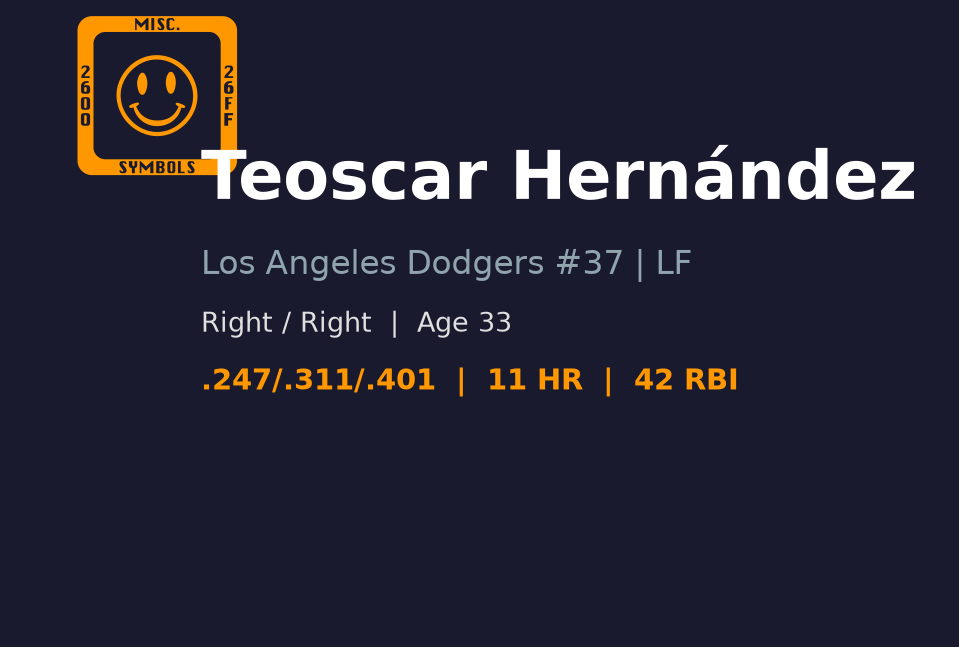
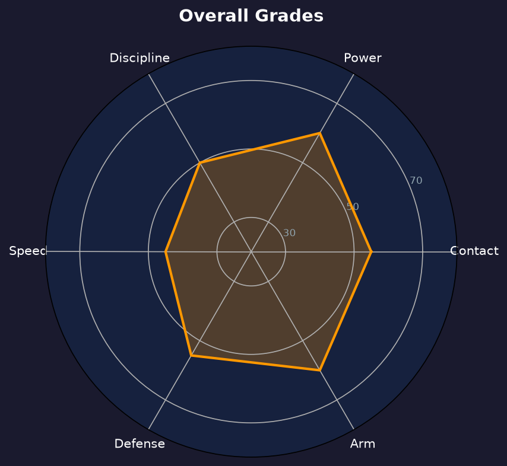

Los Angeles Dodgers #37 | 左外野手 | 活跃

Teoscar Hernandez 是一名以力量见长的右打外野手，2026 年加入道奇后担任左外野主力。他具备稳定的中段打线和 25+ 轰级别的长打产能，但三振率偏高、选球普通，整体攻击效率接近联盟平均。他的防守在外野三个位置都能胜任，臂力是其守备亮点。2026 年截至目前 OPS .714，与生涯平均接近，但相较于 2024 年道奇赛季的 .840 OPS 有明显下滑。他需要在赛季末段提升长打效率，才能在季后赛打线中扮演更重要角色。
以国际自由球员身份加盟休斯顿太空人，开启职业棒球生涯。
2016 年 8 月 12 日完成大联盟首秀，初期在太空人机会有限。
在多伦多蓝鸟连续两个赛季获得美联外野手银棒奖，成为联盟顶尖 power 型外野手。
连续两年入选全明星赛，巅峰期 OPS 超过 .800，单季稳定贡献 25+ 轰。
在洛杉矶道奇打出 .272/.339/.501、33 轰、99 打点的赛季，展现冠军队所需火力。
担任道奇左外野主力，负责提供中段打线长打保护和 RBI 产出。
| 赛季 | 球队 | G | AB | AVG | OBP | SLG | OPS | HR | RBI | SB |
|---|---|---|---|---|---|---|---|---|---|---|
| 2021 | Toronto Blue Jays | 143 | 550 | .296 | .346 | .524 | .870 | 32 | 116 | 12 |
| 2022 | Toronto Blue Jays | 131 | 499 | .267 | .316 | .491 | .807 | 25 | 77 | 6 |
| 2023 | Seattle Mariners | 160 | 625 | .258 | .305 | .435 | .740 | 26 | 93 | 7 |
| 2024 | Los Angeles Dodgers | 154 | 589 | .272 | .339 | .501 | .840 | 33 | 99 | 12 |
| 2025 | Los Angeles Dodgers | 134 | 511 | .247 | .284 | .454 | .738 | 25 | 89 | 5 |
| 2026 | Los Angeles Dodgers | 93 | 324 | .250 | .313 | .401 | .714 | 11 | 43 | 2 |
评分：B-
AVG .250、strikeout rate 约 27% 显示他不是高 contact 型打者，但 barrel 能力让他在球打甜时威胁极大。他的挥棒路径较长，容易在快速球和变化球交界处挥空。
评分：A-
生涯单季多次击出 25+ 轰，平均 exit velocity 和 hard-hit rate 位于联盟前段。2026 年 11 轰、.401 SLG 略低于巅峰，但仍是道奇主要 power source。他的 raw power 足以把球打到任何方向。
评分：C+
33 岁，速度已非卖点，2026 年仅 2 盗。跑垒判断尚可，但不适合担任开路先锋。他的速度足以在右外野防守中覆盖中等范围。
评分：B
左外野防守稳定，range 中等，接球手法可靠。臂力优于平均，能阻止跑者推进。他在外野角落位置的防守值得信赖。
评分：C+
BB% 约 8.1%，三振率偏高。面对变化球和边缘速球容易出棒，是主要被利用弱点。若能提升选球耐心，他的 OBP 和整体攻击效率会明显改善。
Hernandez 主要镇守左外野，也能客串右外野。他的 first step 和 range 属联盟平均，但接球稳定、臂力突出，能有效阻止跑者从 singles 进垒到二垒。他不会是金手套候选人，但也不会成为防守负担。
虽然以左外野为主，但在必要时也能担任指定打击或右外野。他的价值更多集中在打击输出而非守备弹性。道奇安排他左外野先发，是因为他在这个位置能最大化打击贡献同时不牺牲太多防守。
2026 年 OPS .714 接近生涯平均，但相较于 2020-2022 年的巅峰期（单季 OPS .800+）有所下滑。主要问题是三振率居高不下，且出棒范围大。他的 swing-and-miss 问题在面对 elite 变化球时尤其明显。
.401 SLG 对于一名以力量为卖点的外野手来说偏低。若想在季后赛扮演更重要角色，他需要提升 barrel rate 和对变化球的识别。2024 年在道奇打出的 .501 SLG 证明他仍有能力，但 2025-2026 年呈现下滑趋势。
在道奇打线中，Hernandez 主要担任第 5-7 棒，负责提供长打保护和 RBI 产出。他不是建队核心，但是阵容深度的关键拼图。面对左投时他的价值更高。

联盟平均以上 power 型外野手
B 级
2026 年赛季剩余部分，Hernandez 需要提升长打率和减少三振，以维持道奇外野主力的位置。2027 年他仍有望获得一份合约，但随着年龄增长，他可能逐渐转为 platoon 外野手或指定打击。长期来看，他的 best-case 是成为一名 veteran power bat，worst-case 则是因三振率过高而失去先发位置。道奇可能会在休赛季评估是否引进更年轻、contact 能力更好的外野手。
Teoscar Hernandez 出生于多米尼加共和国科图伊，2011 年以国际自由球员身份加盟休斯顿太空人，2016 年 8 月 12 日完成大联盟首秀。他在太空人时期机会有限，2017 年被交易至多伦多蓝鸟后逐渐成长为全明星外野手。2020-2021 年连续获得美联外野手银棒奖，2021-2022 年连续两年入选全明星。2023 年转投西雅图水手，2024-2025 年持续贡献稳定 power 输出。2026 年加入洛杉矶道奇，希望在这座冠军球队中扮演重要角色。